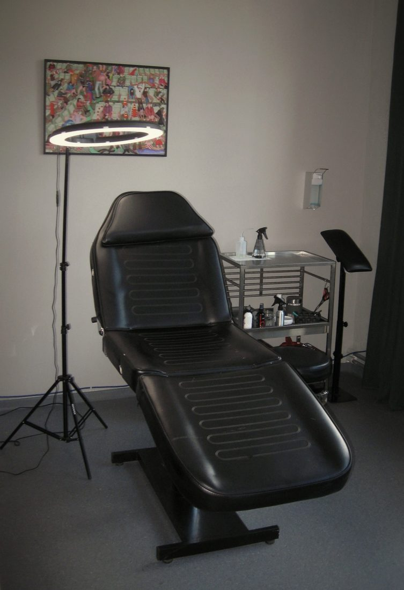

FAQ
Häufige Fragen
Im Folgenden findest du häufig gestellte Fragen zu meiner Arbeit.
Below you will find the questions I get asked most often about my work.
Ich arbeite in meinem eigenen kleinen Studio im Leipziger Stadtteil Großzschocher. Sobald wir einen Termin vereinbart haben, erhältst du die Adresse und weitere Infos.
I work in my own small studio in Großzschocher, a district of Leipzig. As soon as we have agreed on an appointment, you will get the address and all further details.
Für Tattoo-Anfragen nutze bitte mein Kontaktformular. Für alles Weitere kannst du mir eine E-Mail schreiben an tattoo@damagedone.de - ich melde mich immer innerhalb weniger Tage zurück.
For tattoo requests please use my contact form. For anything else, send me an email at tattoo@damagedone.de - I always get back to you within a few days.
Ja, sofern sie stilistisch zu mir passen und ich denke, dass ich sie gut umsetzen kann. Im Zweifel gerne fragen!
Yes, as long as they fit my style and I feel I can do them justice. If you are unsure, just ask!
Ich habe eine kleine Anzahl an sehr einfachen Motiven (einfache Sterne, Kreise, Formen), die ich auf Wunsch mehrfach tätowiere. Alle komplexeren Motive darüber hinaus steche ich grundsätzlich nur einmal. Wenn du dir bei einem Motiv nicht sicher bist, wie es sich dahingehend verhält, komm gerne auf mich zu.
Solltest du Interesse an einem bereits gestochenen Motiv haben, entwerfe ich dir gerne ein ähnliches nach deinen Wünschen.
I have a small number of very simple designs (plain stars, circles, shapes) that I will tattoo more than once on request. Anything more complex than that I tattoo only once. If you are not sure where a particular design falls, just come and ask me.
If you like a design I have already tattooed, I am happy to draw something similar for you, based on your own ideas.
In aller Regel kommen folgende Stellen nicht für meine Handpoke-Arbeiten in Frage: Oberarminnenseite, Rippenregion, Mund und Fingerinnenseite. Grund dafür ist, dass ich dort erfahrungsgemäß trotz großer Sorgfalt eine gewisse Qualität nicht erreichen bzw. garantieren kann. Die genannten Stellen sind schwerer zu tätowieren und neigen dazu, unsauberer abzuheilen als gut geeignete Körperstellen.
Sollte ich bei deinem Wunsch Bedenken oder Hinweise diesbezüglich haben, teile ich dir das auf jeden Fall mit.
As a rule, these placements are not an option for my handpoke work: the inner upper arm, the rib area, the mouth and the inside of the fingers. The reason is that, in my experience, I cannot reach or guarantee a certain quality there, even with a lot of care. Those areas are harder to tattoo and tend to heal less cleanly than well-suited placements.
If I have any concerns or comments about the placement you have in mind, I will always tell you.
Ja. Sollte ich für dich etwas zeichnen, schicke ich dir den Entwurf immer einige Tage vor dem Termin per E-Mail. Ich möchte nicht, dass du ganz spontane Entscheidungen beim Termin treffen musst. Außerdem habe ich so vorher die Zeit, in Ruhe deine Änderungswünsche umzusetzen.
Für kleine Anpassungen und Detailabsprachen ist beim Termin selbst immer genügend Zeit.
Yes. If I draw something for you, I always send you the design by email a few days before the appointment. That way you can take your time with it instead of deciding on the day itself, and any changes you would like can be worked in well before we start.
There is always enough time during the appointment itself for small adjustments and details.
Ja. Ich arbeite selbst im Schichtdienst und habe daher unregelmäßige Terminverfügbarkeiten. Solltest du nur zu bestimmten Zeiten oder an bestimmten Tagen Zeit haben, kannst du mir das über mein Kontaktformular mitteilen.
Yes. I work shifts myself, so my availability is irregular. If you are only free at certain times or on certain days, let me know in my contact form.
Nein, grundsätzlich nicht.
No, I don't.
Pauschal lässt sich das nicht beantworten. Der Preis richtet sich in der Regel nach dem Aufwand, also nach der Arbeitszeit, die wir schlussendlich brauchen. Dafür rechne ich mit rund 100 € pro Stunde und nenne dir vor dem Termin eine Abschätzung des Preises.
Für diese Abschätzung ist es wichtig, dass du mir möglichst genaue Angaben zu deinem Wunsch-Tattoo mitgibst. Vor allem beim Handpoking machen sich geringe Anpassungen in der Größe, im Detailgrad und im Placement mitunter deutlich im Aufwand bemerkbar.
Solltest du ein festes Budget haben, kannst du mir das gerne in meinem Kontaktformular mitteilen.
There is no flat answer to that. The price usually depends on the effort involved - that is, on the working time we end up needing. I work with a rate of around €100 per hour and give you an estimate before the appointment.
For that estimate it helps a lot if you describe your tattoo as precisely as possible. With handpoke in particular, small changes in size, level of detail and placement can make a noticeable difference in effort.
If you have a fixed budget, feel free to tell me in my contact form.
Grundsätzlich ist Handpoking die sanftere Technik gegenüber Maschinen-Tattoos, weshalb meine handgestochenen Tattoos meist als deutlich weniger schmerzhaft empfunden werden.
Wie bei allen Tattoos hängt das aber auch beim Handpoking von der genutzten Nadelgröße, der Größe des Tattoos, der Körperstelle sowie der individuellen Tagesform ab.
Handpoke is generally the gentler technique compared to machine work, which is why my handpoked tattoos are usually experienced as considerably less painful.
As with any tattoo, though, it also depends on the needle size used, the size of the tattoo, the placement on the body and how you are feeling that day.
Tipps zur Pflege deines frischen Tattoos bekommst du in jedem Fall persönlich während des Termins. Zunächst verpacke ich die meisten meiner Tattoos mit Second Skin, also einem transparenten Tattoo-Pflaster, das in den ersten Tagen nach dem Stechen Schutz bietet. Sobald du dieses entfernt und dein neues Tattoo mit neutraler Seife gesäubert hast, empfehle ich, es zweimal am Tag dünn mit einer wundheilungsfördernden Salbe (z. B. Bepanthen Wund- und Heilsalbe o. Ä.) einzucremen.
Sollten im Nachhinein weitere Fragen aufkommen, schreib mir gerne eine E-Mail an tattoo@damagedone.de.
You will always get aftercare tips from me in person during the appointment. To begin with, I cover most of my tattoos with Second Skin, a transparent tattoo dressing that protects the area in the first few days. Once you have removed it and washed your new tattoo with a mild, unscented soap, I recommend applying a thin layer of a wound-healing ointment (e.g. Bepanthen or similar) twice a day.
If any questions come up later on, feel free to email me at tattoo@damagedone.de.
